Într-un oraș, în mod obișnuit, trecutul apare discret în stiluri arhitecturale, în detalii de fațadă, în nume de străzi, licee, piețe, în organizarea străzilor, monumente, ceasuri, fântâni. O placă memorială sus într-un colț, o marchiză de acum un secol într-o fostă mahala, un turn vechi în lumina dimineții, un ceas care cântă ora cu sunete din altă epocă — le putem întâlni în fiecare zi, preț de o secundă. „Cine au fost oare Ion Cîmpineanu sau Popa Tatu?“. În timp ce ne vedem de treburile noastre, fragmente din istoria orașului ne sar zilnic în cale. Interacționăm cu ele în mișcare, uneori aproape pe fugă.
În contrast, muzeele și casele memoriale dispun trecutul în fața noastră într-o formulă statică și concentrată. O casă memorială vine către noi cu un întreg alai de obiecte și povești; o ploaie de meteoriți sosiți din cotidianul unor oameni din trecut. Ne întâlnim cu aceste lumi de demult la adăpostul unei instituții care deja le-a consacrat: ele nu mai au nevoie de recunoașterea noastră, aceasta le-a fost deja conferită. Ne luăm așadar din timpul nostru pentru a ne opri privirea pe suprafețe, texturi, forme și unelte care nu fac parte din cotidianul nostru, dar despre care auzim că ar trebui să ne spună ceva.
Casa Memorială „Tudor Arghezi”, aflată în sudul Bucureștiului, pe dealul Piscului, poate fi văzută ca un portal de teleportare într-o gospodărie din prima parte a secolului XX. Corporalitatea obiectelor din acea vreme este diferită de cea de azi — pare mai bine reliefată și mai îngrijită. Mobila de lemn, vechiul aparat de radio, covata, peria de parchet, untarul, storcătorul de rufe, samovarul, aparatul de radio Atwater Kent, gramofonul, păpușile și pătuțul copiilor, pudrele și parfumurile, cotoarele cărților vechi, ramele groase de ochelari, obiectele de scris — inițial, nu aveam cuvinte pentru multe dintre ele, dar le admiram materia, forma, greutatea. Am încercat să ridic peria metalică de parchet și mi-a fost imposibil. Familia Arghezi era înconjurată de unelte și aparate dintr-o vreme în care plasticul nu era încă principalul material cu care interacționam. Distanța tehnologică face ca monumentele istorice să ne pară nouă, celor de după două revoluții industriale, cantonate „într-un trecut al trecutului“, spunea Françoise Choay.
Dar nu este aceasta o manieră simplistă de a vorbi despre tezaurul de obiecte de pe strada Mărțișor? Un samovar de aici valorează mult mai mult decât cel dintr-o casă mai puțin celebră. Aparatele de radio din anii ’30 de pe Mărțișor evocă mai mult decât istoria tehnicii, ele trimit la încrederea lui Arghezi în „undele fermecate“. Deși casele memoriale pot fi extrem de relevante pentru oricine e preocupat de istoria materială, prin însăși esența lor, aceste locuințe „ridică“ obiectele pe care le adăpostesc la un statut superior. Ele sunt obiecte atinse, folosite de creatorul înregistrat în istorie drept genial — pictori, poeți, arhitecți, oameni politici, etc.
Ce este până la urmă o casă memorială dacă nu o variantă secularizată a vechilor relicve? De unde provine valoarea acestor locuințe dacă nu din contactul lor cu o personalitate extraordinară, mai precis cu versiunea seculară și romantică a sfântului — geniul?
Pe măsură ce contribuția unui individ la tezaurul cultural capătă contur, casa și intimitatea în care a locuit cad sub forța gravitațională a operei și se metamorfozează aproape de la sine în document istoric, uneori chiar din timpul vieții celui sau celei în cauză. În cazul lui Arghezi, poetul-constructor și-a planificat din timp donarea casei către statul român, știind din timpul vieții că locuința sa va intra în circuitul memoriei colective. Ne putem imagina cum, în siajul acestei decizii testamentare, încet-încet, un anume viitor anterior a început să pună stăpânire pe încăperi, mobile și lucruri — de la cele mai cotidiene la cele mai apropiate de „focarul” operei: biroul, biblioteca, stiloul. Dincolo de valoarea de document a casei, se înfiripa astfel și legătura ei magică cu cel pe care urmașii îl vor celebra drept creator al unei poezii noi.
Monumentele istorice au apărut în spațiul european în contextul valorificării artei per se și al apariției Istoriei ca disciplină de sine stătătoare. O biserică gotică are valoare de patrimoniu, cum spunem azi, nu fiindcă este lăcaș de cult, ci fiindcă este un document istoric: ne vorbește despre arta, meșteșugul și viziunea despre lume a predecesorilor noștri. La fel și casele memoriale: ele luptă cu uitarea și au valoare de document istoric. Dar adevărata lor identitate vine din altă parte: din contactul avut cu cineva care, profesional sau artistic, „a făcut istorie”. Felul în care sunt stabilite canoanele (literare, artistice, etc.) este un subiect de aprofundat separat.
Lucrurile pot fi privite și din alt punct de vedere. Tezaurul de obiecte de uz casnic, materiale, aparatură, apropie casele memoriale de colecțiile muzeelor care se ocupă de cultura materială a unui grup sau a unei epoci (muzee etnografice, de arheologie etc.). Cu toate acestea, există o diferență notabilă între cele două categorii de instituții. O casă memorială ne oferă un întreg: lucrurile, încăperile, eventualele obiecte de artă deținute, stau aici în contextul lor originar. Dacă un muzeu transpune lucruri din locul lor de proveniență într-o casetă de sticlă, o casă memorială „îngheață” totul într-o configurație cât mai apropiată de cea din trecut. Primul realizează colaje, cea de-a doua este mai degrabă înrudită cu tehnica fotografiei. Altfel spus, într-un muzeu cu profil istoric întâlnim obiecte ce se adresează unei priviri care păstrează distanța, în timp ce într-o casă memorială dăm peste lucruri: când vedem pudrele Paraschivei Arghezi, aproape că ne-o închipuim în fața oglinzii, folosindu-le.
Așadar, ce este, în fond, o casă memorială? Multe răspunsuri ne pot veni în minte: un portal către trecut, o scenografie protejată cu grijă sub un clopot de sticlă, o ocazie pentru toate generațiile de a vedea și simți cum arăta viața pe când ele nu existau, un loc în care prezentul și trecutul conviețuiesc, un omagiu adus unui om care, pentru unii, a făcut istorie. Jumătate document istoric, jumătate vestigiu investit cu o anume sacralitate seculară, casele memoriale conțin o lume în care ticăie două ceasuri.
Există mai multe feluri de a spune o poveste despre actuala Casă Memorială „Tudor Arghezi“ — nu neapărat o poveste finală, atotcuprinzătoare. Pentru început, e vital să dăm la o parte ghilimelele din dreptul numelui lui Arghezi și să nu îl privim ca pe un soi de marcă sau marfă literară. Pasul următor ar fi să ne întoarcem la începutul secolului XX.
Arghezi decide să își cumpere pământ într-o zonă aflată, pe atunci, la capăt de București: strada Mărțișor — „Dincolo de cimitirul Șerban Vodă, Strada Mărțişor pornea din mahalaua Cărămidarilor și cobora pe Dealul Piscului până la Calea Văcărești. Mahalaua din Dealul Mărțișor aparținea vetrei Mănăstirii Văcăreşti, fiind acoperită de plantații de viță de vie încă din secolul XVI“. În secolul XIX, viile au fost atacate de filoxeră, iar pe deal au început să apară parcelări și noi case: olteni și ardeleni veneau să-și caute norocul în capitala ce avea să cunoască între 1900 și 1930 un boom demografic. Oamenii lucrau cu ziua sau se angajau la fabricile din apropiere: erau căruțași, bucătari, dulgheri, lucrau ca gardieni la închisoarea Văcărești de peste drum sau la Abator, Adesgo, Le Maître, etc. Traiul lor era rural, modest, iar infrastructura lipsea. Probabil că primul contact avut de Arghezi cu dealul Mărțișor s-a petrecut de la fereastra penitenciarului învecinat, unde a fost închis între 1918-1919, pentru articolele sale germanofile. Din acea privire în îndepărtare avea să se nască o casă.
În 1926, el se mută pe strada Mărțișor, la numărul 26, alături de soție și de cei doi copii. Peste drum, încă se întrezărea silueta fostei Mănăstiri Văcărești, devenită penitenciar încă din 1864 și demolată absurd în 1986. În cârciuma „La Mandravela“ (zona fostului magazin BIG), răsunau muzicile de taraf și intrigile. Pentru ridicarea casei, Arghezi a colaborat cu arhitectul George Matei Cantacuzino, dar amprenta proprie a rămas semnificativă. Pentru pereți a folosit un material care ar trece astăzi drept atipic — fibră de bambus cu ciment. Odată finalizată, casa avea un etaj, 18 camere, pod, un balcon de lemn, două turnulețe și alte dependințe. Construcția a durat aproximativ 12 ani, până în 1940 — „Scriam și construiam. Când punea ăla o cărămidă făceam și eu un vers. De asta și scriam oarecum par brides“.
La aproape zece ani distanță de sosirea sa pe Mărțișor, în 1935, Arghezi primește vizita scriitorului Mihail Sebastian, pentru un interviu ce avea să apară în ziarul Rampa. Cei doi discută la „o masă pusă frumos afară sub un copac“, unde îi așteptau „dulcețuri, cafele și țigări“. Sebastian notează trecerea unui „om cu șapcă roșie de gardian“. „La noi“ lucrează deținuți ai penitenciarului de peste drum, dintre care mulți țărani închiși pentru „fleacuri“, explică Arghezi. Seara, la plecare, „scot unul câte unul tichiile: «s’trăiți, dom’ Arghezi!»“, observa Sebastian. Mă întreb dacă la ridicarea casei finalizate în 1940 au pus umărul și acești oameni cu tichie, vizibil apreciați de poet, el însuși fost deținut. Sau poate că aceștia lucrau doar în ce avea să devină livada din jurul casei.
Întrebat de Sebastian dacă vecinii lui înțeleg cine este, Arghezi răspunde fără elitism: „Își închipuie și ei că sunt un om muncitor, ca fiecare dintre ei. Văd lumina aprinsă la fereastra mea noaptea și atunci înțeleg că viața este pentru mine, ca și pentru ei, un lucru serios, care se câștigă cu mari opintiri, cu neîncetată muncă. Și mai sunt în mahalaua noastră câteva familii care au dat naștere la intelectuali. Aș spune intelectuali de ordin moral. Lucrează, strâng cărți, dau reprezentații ei între ei — și nu-i întreabă nimeni, nu-i ajută nimeni. Este un profesor de istorie, un căpitan farmacist, un funcționar de la institutul meteorologic, care e și dirijor de cor. Cântă la corul lui și două tinere fete care fac tot timpul grădinărie. Stropesc crinii și cântă Duminica la cor. Oameni simpli, delicați, pe care i-a ales și aici o chemare dinăuntru, singura care îi alege bine pe oameni“.
Momentului venirii în Mărțișor, în ’26, a fost o schimbare de paradigmă pentru Arghezi. În narațiunea lui personală, această mutare a reprezentat finalul perioadei sale de nomadism: „Eu nu aveam problema asta — a unei case, a unei gospodării — înainte de a fi avut copii. Eram un nomad. Geamantanul meu sufletesc era gata de plecare oricând“, îi spune lui Sebastian. Între 25 și 30 de ani, Arghezi și-a purtat „geamantanul sufletesc“ prin numeroase orașe din Europa — Fribourg, Geneva, Paris, Londra, Roma, etc. În orașele elvețiene a locuit mai mult. Neavând pe atunci bacalaureatul luat, a asistat neoficial la cursurile universităților de aici. Pentru a se întreține, a practicat tot felul de meserii: vânzător de gazete, hamal, ucenic-bijutier, etc. Cei 5 ani petrecuți în afara țării (1905-1910) au urmat unei perioade de călugărie nu tocmai fericită: „Am plecat în străinătate ca să ies dintr-o altă străinătate în care mă aflam: biserica” (Rampa, 1929).
Ca orice fost nomad, Arghezi se simțea în largul lui în atopie. Astăzi, biroul său de lucru este traversat de privirea unui alt nomad notoriu, Jean-Jacques Rousseau. În tinerețe, în mijlocul Genevei, pe Île Rousseau, Arghezi văzuse statuia de bronz a filosofului. Acestuia, sau mai bine zis acesteia, i-a scris două scrisori fictive, în 1912 și 1928. În prima, îi cerea un simplu psst din „buzele sale de bronz“ și îl/o întreba glumeț dacă primește regulat revista Facla (ziarul unde a apărut scrisoarea). Apoi, într-o șarjă de autocritică, deplângea viața „ocupată“ și inautentică a bucureștenilor: „Trăim niște zile minunate cînd timpul se pierde cu o artă infinită“. Tot lui Rousseau îi confesează că doar Caragiale a fost scriitor în adevăratul sens al termenului, în timp ce el însuși și toți cei ca el nu sunt decât „și scriitori“ — își pierd timpul fiind gazetari și membri de uniuni scriitoricești. În numărul 130 al pamfletului Bilete de papagal, la 48 de ani, Arghezi se întoarce iarăși către prietenul său din bronz: „(…) ne cunoaștem destul de bine, bunul meu filosof, (…) noi am stat de vorbă vre-o zece ani: dumneata din bronz și eu în pardesiu, pe un frig apreciabil. Afară de papagalul meu cu unghiile înghețate; afară de miile de pasări albe cenușii, venite din Norduri, (…) afară de Muntele Alb și de becurile electrice și afară de singurateca undă a Lemanului, cine mai sta pribeag cu noi?“ (sublinierile îmi aparțin).
Rousseau a crezut mai puțin în luminile progresului științific și mai mult în bucuria resimțită în natură, în plimbări solitare, departe de cancan-ul urban. Poate că ceva din acest spirit l-a împins pe Arghezi să prefere marginile Bucureștiului, nu centrul său. Unui fost nomad îi stă bine la margine. Mai ales dacă se poate înconjura de o livadă. Liminală și încă ne-urbană, mahalaua Mărțișor îi oferea poate loc pentru tatonare: un nici-nici. Sau un safe space, cum am zice azi. În timp, Arghezi ajunge să fie delegatul celor din mahala pe lângă autoritățile locale. Prin eforturile sale, în zonă ajung canalizarea, transportul public, chiar și becurile electrice, cu tot cu pribegia lor.
Arghezi donează casa statului român, iar din 1974 fosta sa proprietate devine muzeu memorial. Strada Mărțișor, mănăstirea/penitenciarul Văcărești și cârciuma „La Mandravela“ fuseseră principalele puncte de reper ale zonei atunci când s-a mutat. Dintre ele, doar strada a supraviețuit până astăzi.
Am ajuns cu întârziere la Casa Memorială „Tudor Arghezi“, într-un taxi care m-a ridicat din centru și m-a plonjat în traficul orei 16 al Bucureștiului. Când am început să urcăm pe Mărțișor, am simțit o primă ușurare: scăpasem de Calea Văcărești, puteam vedea și altceva decât mașini încolonate și mâini strânse nervos pe volan. A doua alinare a venit atunci când am intrat pe poartă și am început să mă îndepărtez de stradă pe poteca dreaptă, lungă și pietruită, ce duce către casă. În stânga mea, erau doar pomi și vegetație. Deși fusesem de trei ori la Casa Memorială, era prima oară când vedeam livada înverzită. Miresmele începuseră să prindă contur, era luna mai, iar eu, fără să bag de seamă, începusem să merg mai încet. Drumul din pietriș te face să încetinești pasul, mi-am zis, încercând să merg mai alert. L-am găsit pe Rareș, fotograful nostru, pe o bancă, lângă cușca lui Zdreanță; și el găsise fără efort spațiu pentru un respiro. Dorothea Nicolescu, muzeografă aici de mai bine de un deceniu, ne aștepta înăuntru. Ne-am așezat într-o încăpere micuță, cu canapea și fotolii vechi, în stânga intrării de la parter. Dorotheea ne-a spus ulterior că ne aflam exact sub biroul lui Tudor Arghezi de la etaj.
Parterul nu este deschis publicului, tezaurul casei fiind atent organizat în camerele de la etaj. În plus, în curte poate fi vizitat fostul spațiu al tipografiei lui Arghezi, Potigrafu’. Dorotheea ne explică că aici nu a fost imprimat decât un singur volum, Drumul cu povești, deși circulă zvonuri că ar fi apărut și Bilete de papagal. Imediat după apariția volumului ce conține patru povești, în 1948, tiparnița a fost confiscată de comuniști.
Anexa a devenit „(…) spațiu de primire a vizitatorilor. Acolo se organizează lansări de carte sau diferite evenimente. Facem ateliere cu copii, spectacole de umbre, le proiectăm filmulețe“. Locul are un șarm aparte. În jurul unor tiparnițe de epocă și a câtorva sertare grele cu litere de plumb aduse pentru a recrea atmosfera, toate strânse în mijlocul încăperii, de-a lungul pereților scunzi sunt expuse periodic fotografii, ilustrații, etc. Eu am prins în ultimul an două expoziții: o colecție de ilustrații (1915-1916) ale lui Francisc Șirato, colaborator al lui Arghezi la revista Cronica, și o selecție de fotografii ale familiei Arghezi, din arhiva MNLR.
Dintre cadrele de familie, mi-au rămas în minte cel puțin două: o fotografie cu soții Arghezi îmbrăcați gros, pe deal, ținându-și schiurile pe lângă ei, și o alta cu împrejurimile casei — doar vegetație. Ambele au fost făcute până în anii ’60 și vorbesc despre o lume dispărută: pe dealul Piscului (fostul Mărțișor) nu se mai schiază, iar în jurul casei memoriale priveliștea e acum aglomerată. S-au ridicat blocurile de pe Olteniței, mall-ul de pe locul fostei Mănăstiri Văcărești și vile nu tocmai aliniate profilului acestei vechi străzi a Bucureștiului. Înainte, „nu se vedeau blocuri în poze. Acum, se văd. La un moment dat, mi-a venit în minte să fac cumva să le tai în Photoshop. Efectiv stricau tot farmecul. (…) Ăsta a fost impulsul meu. Să copiez acolo și să se vadă orizontul frumos, verde“, ne spune Dorotheea.
Relația casei cu priveliștea din jur este fundamentală. Cele două turnulețe dorite de Arghezi aveau scopul precis de a deschide spre o panoramă a Bucureștiul și spre linia orizontului. Din motive de siguranță, cele două puncte de observație nu pot fi azi vizitate. Ele sunt spații administrative, la fel ca podul și balconul de lemn, vopsit în roșu. Când am urcat la etaj pentru a vizita încăperile, Dorotheea ne-a făcut și un tur al priveliștilor oferite de diferite spații ale casei: „Dintre spațiile administrative, turnulețele sunt cele mai speciale. Tot pe acolo se iese pe acoperiș dacă trebuie o reparație sau trebuie să verificăm ceva. Balconul se întinde pe toată lungimea dormitorului, îl vedeți de afară, de lângă cușca lui Zdreanță. Are foarte multe geamuri. Și acolo e o atmosferă plăcută și se vede bine toată livada. Dar și de aici, din «holul cu medalii», așa cum îi spunem noi, tot așa, pe geam, dacă te uiți, vezi toată livada din față. Și aici e o priveliște frumoasă.“ Am putut trage cu ochiul preț de un minut în balconul închis publicului: aerul era cald, iar livada întinsă și însorită sub noi. Am văzut o ciocănitoare în copacul din față. Dorotheea ne-a spus că familia Arghezi își ținea aici bradul de Crăciun.
Am trecut la pas lent prin camere și tezaurul lor de lucruri, lăsându-ne privirile să pice oriunde doreau. Trecutul prindea viață sub cuvintele Dorotheei care animau rând pe rând obiectele casnice, macheta casei aflată în spate, scările către pod, camera copiilor, picturile deținute de Arghezi etc. Din ultima categorie, face parte și o misterioasă operă anonimă, aflată pe hol.
O lume încremenită poate interesa așa cum interesează o locomotivă cu abur sau o suliță folosită de Homo neanderthalis: ceva din trecut a ajuns până la noi, ne aduce informații, ne minunează. Casele memoriale ale Bucureștiului, inclusiv „Tudor Arghezi”, nu au traversat secole, dar aduc un soi de mesaj într-o sticlă. Este însă nevoie să deschizi sticla.
Uneori ne comportăm de parcă „facem inventarul” atunci când privim finisajele mobilei, detaliile țesăturilor, cărțile îngălbenite. Lucrurile rămân departe, sub un fel de miraj opac. Le putem eventual face poze pentru feed-ul de pe social media. O altă manieră de a privi este însă aceea în care încerci să citești în artefactele din fața ta semnele vremurilor din care ele provin. Atunci, din pur observatoare, privirea ta devine hermeneutică, interpretează. Un muzeu, o casa memorială pot fi spații de exersare pentru arta interpretării, iar ghidajul muzeografilor e de mare ajutor în această privință. Dorotheea ne-a arătat, de exemplu, că în biblioteca lui Arghezi se găsesc cărți despre cum să crești albine, capre, cum să faci vin etc. Cum putem interpreta acest fapt, ce ne arată el? „Dacă nu aveai internet și erai curios, voiai să afli diverse lucruri, erai nevoit să cauți în cărți”, a spus ea. Eu am plusat puțin și m-am gândit că aceste titluri atestă spiritul DIY (Do It Yourself) al lui Arghezi. Ipotezele pot continua.
Am discutat cu Dorotheea Nicolescu despre publicul casei memoriale și despre interacțiunea acestuia cu trecutul adăpostit în camerele sale: „Din punct de vedere al interesului, am putea să împărțim publicul în două. Unii vin cu familia și o fac de drag, iar alții vin cu școala, adică profesorii îi aduc și fac foarte bine. La cei din urmă, mai ales la elevii mai mari, se vede că nu prea au răbdare și tragere de inima. Dar, în general, când ajung aici sunt surprinși și eu zic că pleacă mulțumiți. Mai ales dacă iau și o activitate, cu atât mai bine, mai au puțin timp să se împrietenească cu locul. Sau dacă stau să asculte și poveștile. Dar, oricum, chiar și copiii sunt surprinși și cred că pentru ei e ca o călătorie în timp. Faptul că e veche casa și că toate obiectele sunt originale, vechi, și văd sobele și mobilierul sculptat și tablourile, inclusiv mirosul, stârnește ceva în copii. O curiozitate despre cum era pe vremuri, cum era înainte. Un copil mi-a zis că miroase a trecut. «Mă, voi simțiți? Miroase a trecut».“
Dincolo de prezența perceptibilă a trecutului, la „Tudor Arghezi“ există și foarte mult prezent. Se organizează periodic lansări de carte, expoziții, ateliere, concerte, acțiuni de reciclare etc. Multe dintre acestea se întâmplă în jurul casei, în tipografie sau în livadă. Casa și ale sale turnulețe rămân fixe, ancorate în trecut, în timp ce perimetrul este un spațiu dedicat actualului. Dorotheea a imaginat o sumedenie de activități suplimentare pentru vizitatori, mai ales pentru copii sau elevi: „Dacă o persoană dorește să viziteze cu ghidaj, costă 20 de lei. O activitate suplimentară costă 7 lei. Eu zic că merită. Ori un atelier să citim, să bricolăm, să vadă un spectacol de umbre, să facă niște papioane pentru un manechin cu Arghezi și să se pozeze cu el. În fine, am făcut multe de-a lungul anilor. Eu m-am ocupat de zona asta, de activități de educație muzeală cu copii și am făcut ceva nou tot timpul.“ Muzeografa și gazda noastră se simte privilegiată să lucreze la casa memorială, „L-am cunoscut în felul ăsta mult mai bine pe Arghezi. Iubesc locul ăsta.“
Vizitele grupurilor de elevi din întreaga țară sunt periodice. În ultimii ani, a fost consolidată totodată și relația cu vecinii de cartier. Din vara lui 2021, livada din spate găzduiește o grădină comunitară. Proiectul „Livada Comunitară din Mărțișor“ a fost demarat de un grup de inițiativă civică, Acțiunea Comunitară Tineretului (ACT), în parteneriat cu MNLR. „Inițiatoarea proiectului a montat niște lăzi pentru compost aici și a făcut un grup cu oameni din cartier; și aceștia vin și aduc resturile vegetale, să le transformă în compost. Sau organizează diferite activități, cu specific ecologic. Cu copii, cu școli din cartier și cu familii. Cu ocazia asta vin cei din preajmă. Sunt mulți care vin și zic, « Știți că stau de 10 ani aici. Sau de 20 ani. Și abia acum am venit. N-a mai fost de când eram mic și veneam cu școala, deși stau la o stație distanță ». Se întâmplă.“
După turul memorial de forță de la etajul casei, spațiul livezilor se deschide ca o oază. „La capitolul animale sălbatice și păsări sălbatice am fost surprinsă când am venit aici. Eu am fost crescută în București și nu prea văzusem multe animale și păsări. Nu știam cum arată coțofana, care e mierla, care e graurul. Dar aici le-am învățat, sunt foarte multe. Am văzut, de exemplu, până și fazani. Într-un an, când chiar nu au fost bani și nu s-a cosit la timp, s-a făcut iarba mai mare și au venit fazani. Am văzut veverițe aici în curte; și insecte, tot așa, cum nu mai văzusem niciodată.“
Fiind vorba de o proprietate extinsă, întreținerea casei și a livezii nu este nici simplă, nici ieftină. Dintre cele cinci case memoriale gestionate în București de MNLR, „Tudor Arghezi“ este, de altfel, cea mai costisitoare. „Noi facem liste tot timpul. Le semnalăm și se decide în funcție de buget ce se poate face, care sunt prioritățile, ce ar fi mai urgent. Și în funcție de buget se rezolvă pe parcurs.“ Administrarea casei pică în responsabilitatea Muzeului Național al Literaturii Române, iar bugetul alocat vine de la Primăria Municipiului București. „Ce poate face muzeul cu bugetul alocat este la limita subzistenței caselor. Nu numai a noastră, ci, în general, a muzeului și a celorlalte case memoriale. Nu e nimeni de vină. Ăsta e bugetul pentru cultură. (…) Acum, dacă te întrebi ce va fi peste 50 de ani, dacă o să mai țină casa peste 50 de ani sau peste 100, la nivelul actual de bugetare, nu cred că o să mai țină. Adică sunt lucruri importante care trebuie făcute și pentru care nu se găsesc bani. (…) Orice lucru se degradează în timp. Totuși, dacă ar exista mai mulți bani de investit, probabil că s-ar degrada mai încet.“ Acestei temeri a Dorotheei, aș adăuga-o și pe cea legată de dezvoltarea urbană iresponsabilă și amnezică.
Deasupra livezii de pe Mărțișor se adunau nori de furtună. Am ieșit din fosta tipografie și am aruncat un ochi în biroul-atelier al muzeografei. Ne-a vrăjit iremediabil recuzita pentru spectacolele de umbre pe care le-a gândit plecând de poveștile lui Arghezi și nu numai. Apoi ne-am luat călduros la revedere. Dorotheea urma să meargă spre stația de tramvai pe una dintre potecile „secrete“ ce încă străbat dealul. Am pornit spre centru. Pe drum, a început ploaia. Am mers pe jos până acasă, prin lumina caldă ce însoțea șiroaiele de ploaie. Îmi tot reveneau în minte imagini: biroul lui Arghezi, surâsul lui Rousseau, creațiile Dorotheei. Mă simțeam de parcă revenisem de pe o insulă.
Françoise Choay, Alegoria patrimoniului, K. Kovâcs, București, Editura Simetria, 1998.
Alois Riegl, Le culte moderne des monuments, trad. D. Wieczorek, Paris, Seuil, 1984.
Mihail Sebastian, Nouă convorbiri, București, Hasefer, 2014.
https://ghidulmuzeelor.cimec.ro/id.asp?k=22&-casa-memoriala-tudor-arghezi-bucuresti
https://www.revista-studii-uvvg.ro/wp-content/uploads/2010/08/plecarea-lui-tudor-arghezi.pdf
https://cartierulberceni.com/2015/11/19/la-final-in-martisor/
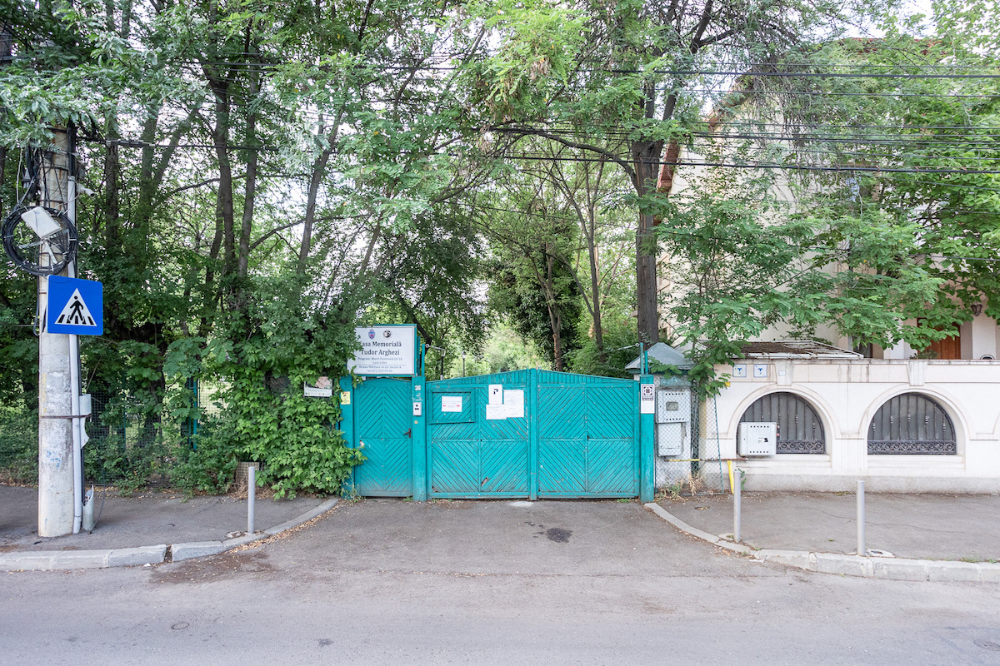
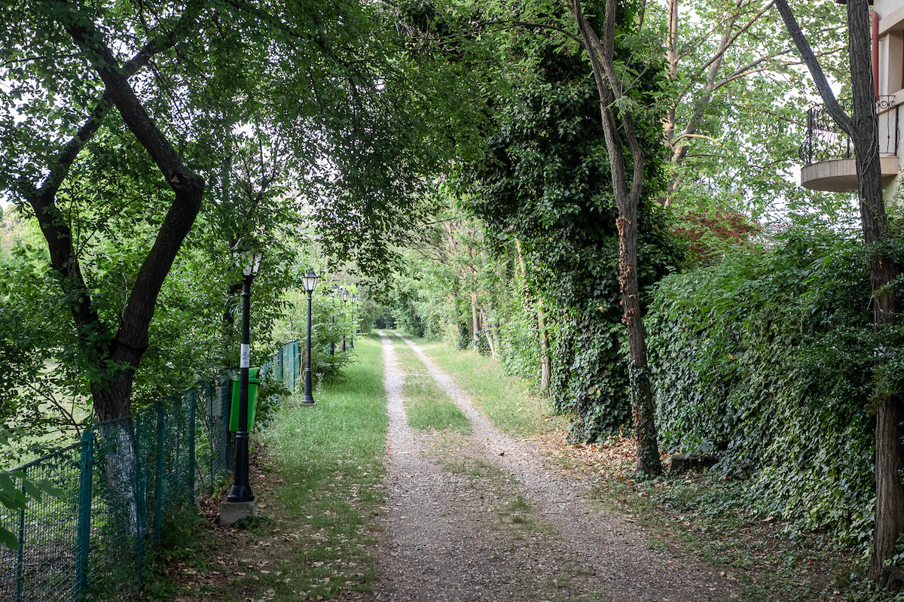
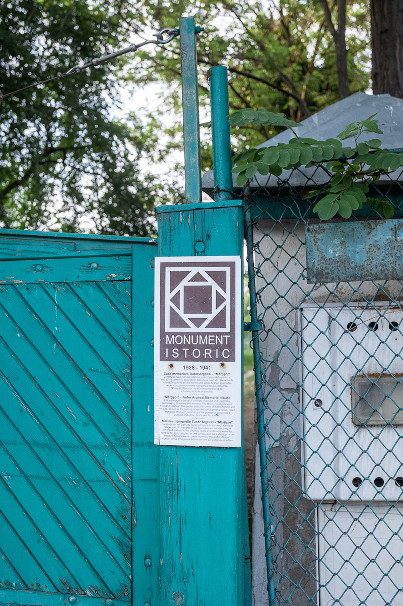
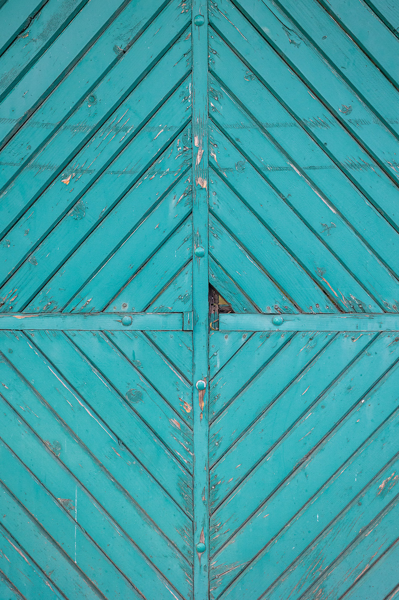
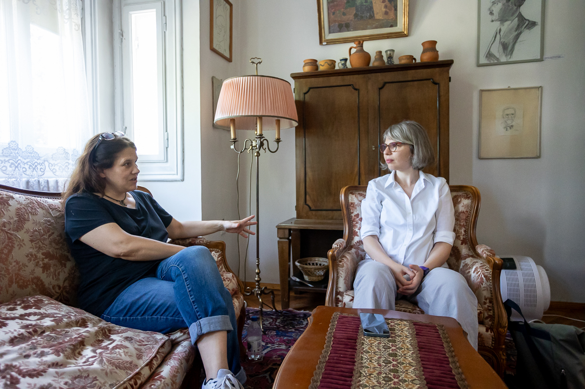
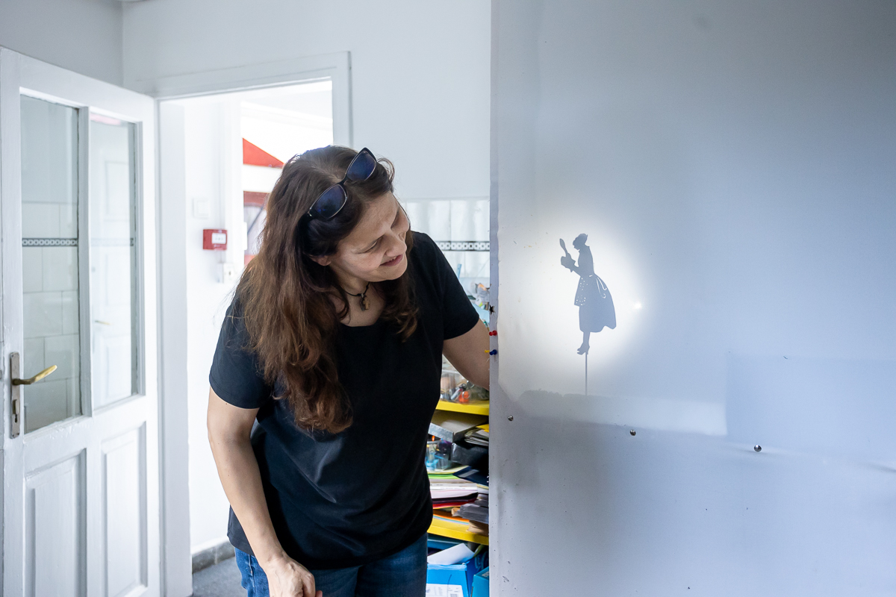
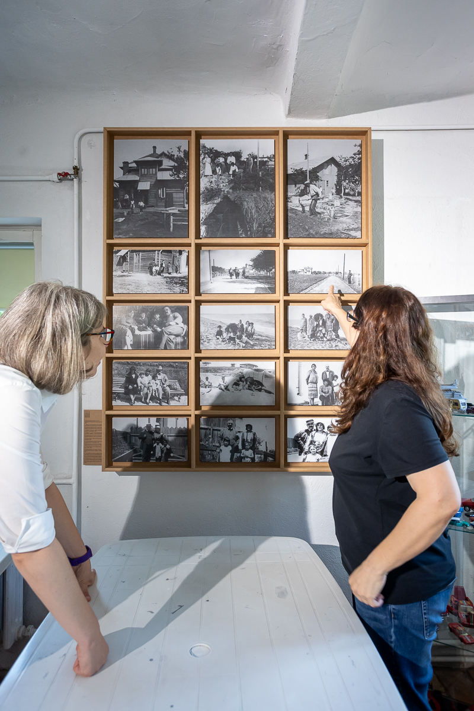
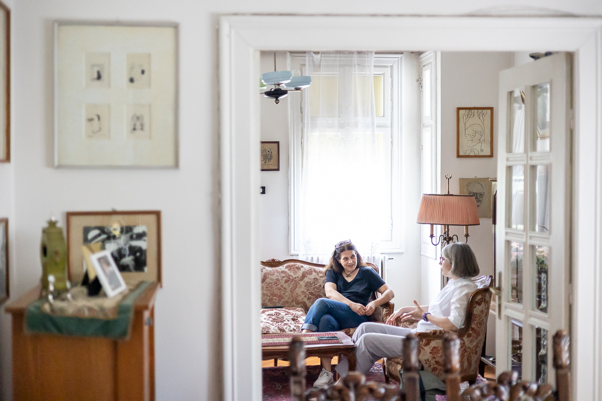
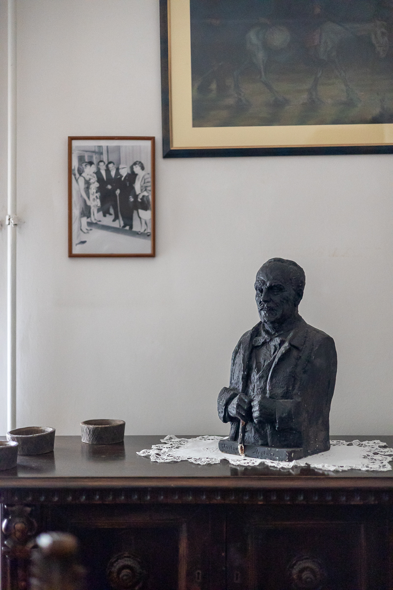
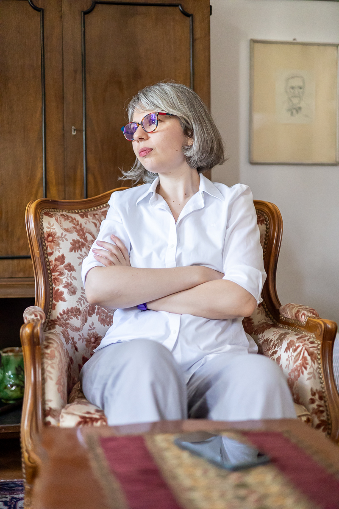
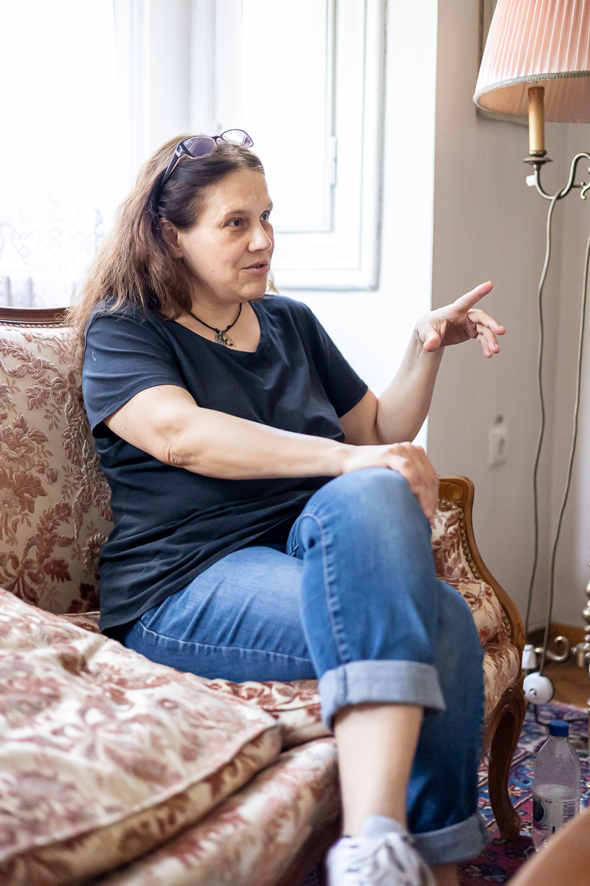
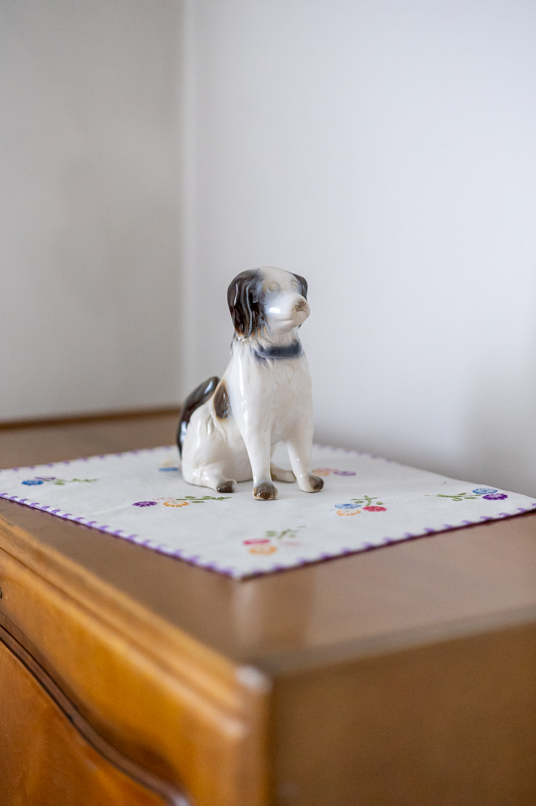
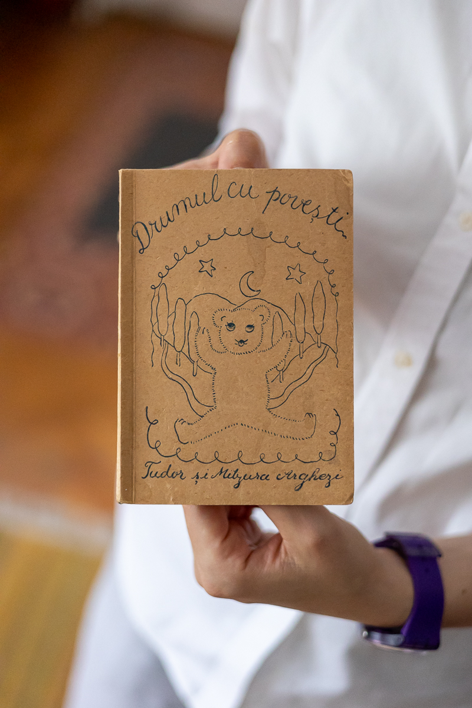